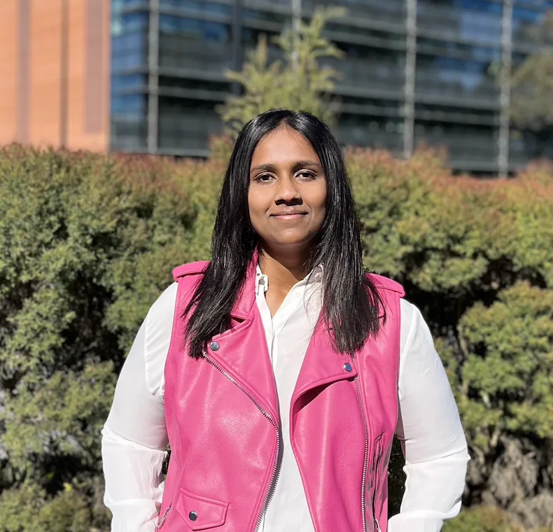
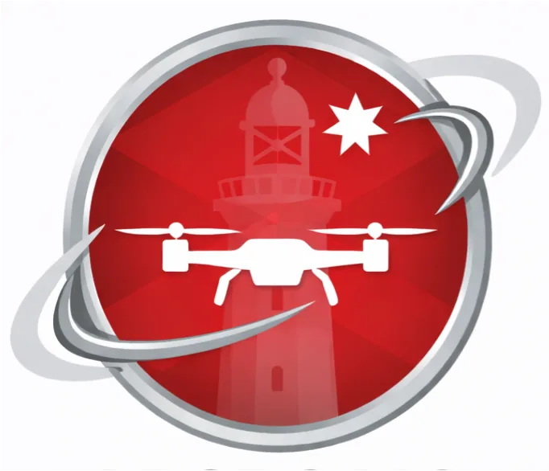
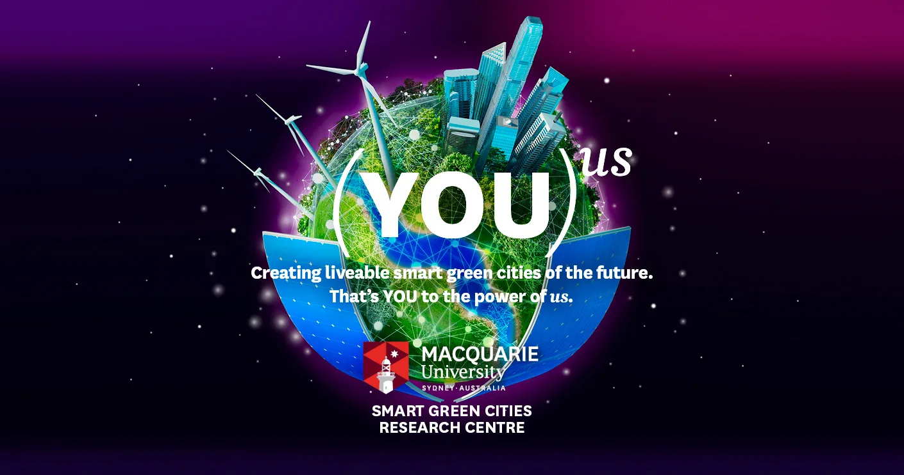

About Me


Hey, fellow human! I'm Alice James, a Robotics Research Engineer at Macquarie University specializing in robotics, avionics, and aerial robot autonomy. I thrive on turning complex ideas into functional systems, bridging the gap between research and real-world impact through entrepreneurship and education. Driven by a deep curiosity for humanity and the universe, I aim to build technology that expands our collective understanding and fosters connection. I’m always open to meaningful collaborations in robotics, innovation, and applied research.
Music |
Photography |
Favourite Shows |
Travel |
Science & Tech |
Nature & Universe |
Gaming
Skills
Educational Lineage
Worked on Wearable Sensors and Computer Vision Applications.
Worked on Sensors, Robotics, and IoT based Smart City Project.

Worked on Software Engineering, Robotics, and Machine Learning.